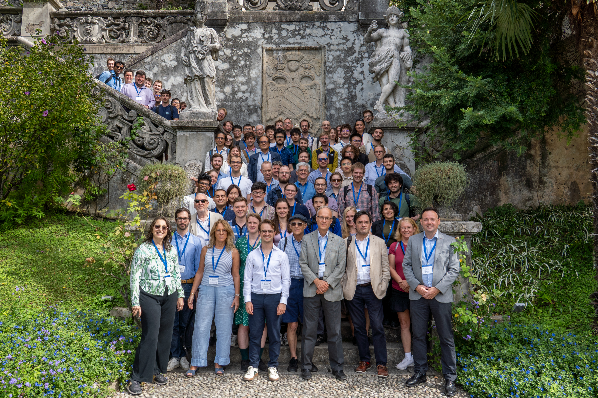

Workshop archive: agenda, speakers, committee, and group photo
Back to homepage Agenda on this page Book of Abstracts
2026 Varenna–Lausanne group photo
The full programme and proceedings material for the 2026 workshop are available below.
PPCF submission deadline: April 30th, 2027.
How to submit: Invited speakers submit directly to PPCF. Poster presenters were asked to send an early draft to varenna-lausanne@epfl.ch by 14 September 2026 for workshop refereeing; drafts not prepared in time could still be sent to the editors after the workshop and considered for the issue.
Please use the PPCF author guidelines and templates, and when submitting, select the special issue titled: "Special issue on the 2026 joint Varenna–Lausanne International Workshop on the Theory of Fusion Plasmas."
Full programme for the Joint Varenna–Lausanne International Workshop on the Theory of Fusion Plasmas at Villa Monastero, Varenna, Italy, 21–25 September 2026.
14:30 – 16:00 Poster session 1: P1 – P13
16:00 – 16:30 Coffee break
16:30 – 18:00 Poster session 2: P14 – P26
14:30 – 16:00 Poster session 3: P27 – P39
16:00 – 16:30 Coffee break
16:30 – 18:00 Poster session 4: P40 – P51
P1: Kinetic ballooning modes and electromagnetic stability in W7-X — K. Aleynikova
P2: Gyrokinetic investigation of zero magnetic shear regions in tokamaks — O. Anuaruly
P3: Simplest Models of Tokamak MHD — Wayne Arter
P4: Gyrokinetic analysis of internal transport barriers in stellarators — J. Ball
P5: Reduced model of the interaction between microturbulence, energetic particles and energetic particle driven modes — T. Barberis
P6: MHD Equilibria via Voigt Regularization — Andrew Brown
P7: Analysis of the electromagnetic and electrostatic instability induced by runaway electrons in a magnetized plasma — A. Cardinali
P8: Nonlinear saturation of Axisymmetric (n=0) modes driven by Energetic Particles in Tokamaks — S. Cavallero
P9: Stellarator design points and optimized equilibria for compact high-field nuclear fusion reactors — F. Ceccherini
P10: Application of ECRH and NBI in compact high-field stellarator nuclear fusion reactors — L. Galeotti
P11: Minimal Model for Floquet Modes in a Tokamak — M. Evans
P12: Validation and benchmarking of gyrokinetics in low-recycling lithiated conditions with Gkeyll and XGC — M. Francisquez
P13: Effect of magnetic drift on the stability structure of the ambipolar condition in nonaxisymmetric plasmas — K. Fujita
P14: Resonant staircase formation and zonal flow amplification in tokamak turbulence: the role of negative mass instability and mode synchronization — D. Del Sarto
P15: Analytical approximation of the velocity distribution through the collisional layer — A. Geraldini
P16: Continuous linear to nonlinear analytic treatment of tearing and double tearing modes with toroidal effects and fast particles — J. P. Graves
P17: Bootstrap current beyond the near omnigenous asymptotic model — G. Graßler
P18: Runaway-Electron Avalanches as a Branching Markov Process — S. Guinchard
P19: Driftless Star: an end-to-end pipeline for transport-consistent stellarator optimization — R. K. Hashmani
P20: Dynamics of ion temperature gradient modes in burning plasma conditions in the presence of energetic particles — R. Ivanov
P21: kobra: a new Vlasov code with AMR — S. Konewko
P22: Full-F Gyrofluid Vortex interaction with arbitrary wavelength Polarization — Franz. F. Locker
P23: Second stability region for gyrokinetics and the L-H transition — R.J.J. Mackenbach
P24: Global Fluid Turbulence Simulations of W7-X Internal Magnetic Island Configurations — M. Madeira
P25: Reduced Magnetohydrodinamics studies on tungsten transport inside magnetic islands — Chiara Marchetto
P26: Interpretation of the Dimits shift as a phase transition — L. N. Marquant
P27: Kinetic modeling of emissive plasma sheath — A. Medouni
P28: Fast ITG eigenmode-eigenfrequency prediction in general geometry — M.C.L. Morren
P29: An improved knock-on operator for runaway avalanche modelling — Isabel Muzio
P30: Direct optimization of steady-state plasma profiles in stellarators — E. Lascas Neto
P31: Theory of nonlinear zonal flow dynamics in toroidal geometry — R. Nies
P32: On the Shafranov shift in stellarators — P. Helander
P33: The role of different nonlinearities in two-dimensional fluid ITG models — G. Paramasivam
P34: Gradient-driven instabilities in 2D models for tokamak edge — F.I. Parra
P35: Stellarator-Tokamak Hybrid configurations for representative TCV discharges — L. Rais
P36: Convective-diffusive modeling of anomalous particle and energy transport in 2D interchange-dominated simulations. — O. Renders
P37: Nonlinear interactions between energetic particles, Alfvén eigenmodes and ITG driven turbulence in global, gyrokinetic, electromagnetic simulations — B. Rofman
P38: Assessing the effect of alpha-particle-driven modes on the fusion power gain in a burning plasma — J. Ruiz Ruiz
P39: Understanding the sensitivities of the radial electric field between favorable and unfavorable configurations using SOLEDGE3X simulations — G. El Saifi
P40: Plasma transport in a chaotic magnetic field using an MHD model — V. Simon
P41: Nonlocal integral kernels for ICRH – Progress with the implementation into PSYDAC — C. Slaby
P42: Guiding center motion in self-consistent axisymmetric mirror equilibria — C. D. Stephens
P43: Adjoint-based trust region method with DGSEM discretization for MRxMHD in HKT slab geometry — Rongping Tang
P44: Solving the phase-space relaxed MHD model: from cross-field flow to the weak ideal Ohm's law — A. Tavassoli
P45: Stellarator Coil Optimization for Beta-Resilient Divertor Island Positioning — M. Titze
P46: Electron-temperature-gradient turbulence and secondary-instability saturation with large density gradients — L.-P. Turica
P47: Kinetic solutions to the stationary collisionless magnetised plasma sheath — Nicole Vadot
P48: 3D JOREK simulations of runaway electron benign termination on TCV — C. Wang
P49: Impacts of effective diffusion caused by electron temperature gradient turbulence — Tomo-Hiko Watanabe
P50: Nonlinear frequency chirping of energetic-particle-driven geodesic acoustic modes — R. Wu
P51: On the kinetic continuous spectrum in toroidal plasmas — F. Zonca
The following speakers have been invited to present at the 2026 Varenna-Lausanne Workshop, September 21–25, Varenna, Italy.
The Scientific Committee selects speakers based on scientific excellence, while aiming to ensure a balanced program that reflects diversity in geographical location, professional background, and gender. The following lists show the current members of the Scientific Committee, in alphabetical order.
D. BORBA (Lisbon, Portugal)
E. BELLI (California General Atomics, USA)
I. CALVO (Madrid, Spain)
L. FIGINI (Milan, Italy)
G. FU (Zhejiang, China)
T. FÜLÖP (Chalmers, Sweden)
X. GARBET (Cadarache, France and NTU, Singapore)
R. GANESH (Bhat, IPR, India)
J.P. GRAVES (EPFL, CH and York, UK), Scientific Director
C.J. HAM (Culham, UK)
P. HELANDER (Greifswald, Germany), Chairman
S. HUDSON (Proxima Fusion, Germany)
M. HOLE (Canberra, Australia)
Y. KISHIMOTO (Naka, Japan)
M. MURAGLIA (Marseille, France)
R. MACKENBACH (EPFL, CH)
S. L. NEWTON (Culham, UK)
V.P. PASTUKHOV (Moscow, Russian Federation)
E. POLI (Garching, Germany)
F. PORCELLI (Torino, Italy)
O. SAUTER (EPFL, CH)
D. TSKHAKAYA (Prague, Czech Republic)
F. WAELBROECK (Austin, USA)
H.R. WILSON (UKIFS, UK)
A. WRIGHT (Wisconsin, USA)
F. ZONCA (Frascati, Italy)